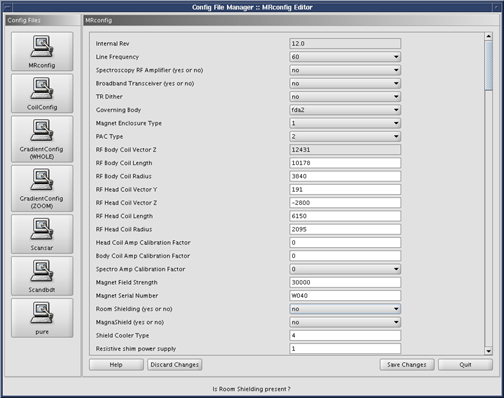
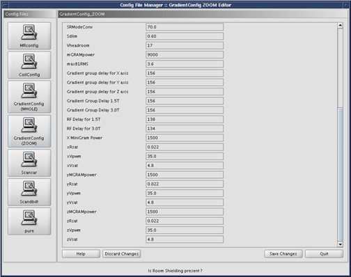
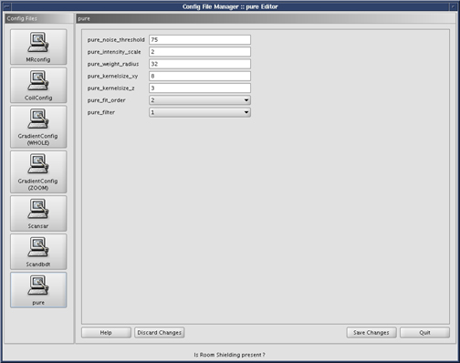

Operating Documentation
Direction 5440000, Rev# 5
Signa HDxt Service Methods
Module Version 1.0, Version Date 4/27/07
Operating Documentation |
| Last Update | 02/10/2005 |
| ||||
| The MR Config File Manager and the Coil Config File Manager should not be needed to configure the system. All system changes should be made through Guided Install option. | ||||
The Configuration File Manager is a graphical interface used to change the contents of the Coil Configuration File, MR Configuration File, Gradient Configuration Files (there are two for TwinSpeed), and the SAR Configuration File. With the introduction of 12x, the hardware is configured through “Guided Install”, rather than Configuration File Manager. No changes should be needed for the MRConfig or GradientConfig. The Config File Manager can be used to view the mentioned files. Changes for coils must be done using the MRCoil config file as described in this document, as it contains pre-configured parameters for all GE coils, so adding a coil is as simple as [Click To Add].
To start the Configuration File Manager, go to the Service Desktop and start the Service Desktop Browser if it's not already running. Continue by following the steps shown in Illustration 1.
Illustration 1: Starting the Config. File Manager

The Configuration File Manager main screen will open. Illustration 2.
| ||||
| The MR Config File Manager should not be needed to configure the system. | ||||
Illustration 2: Configuration File Manager Main Screen

A detailed view of MRconfig entries can be found in Site Configuration/Options Information.
When you’re finished editing values, Click the [Save Changes] button to save any changes you have made. Or Press the [Discard Changes] button if you do no wish to scan any changes made. See Illustration 3.
Illustration 3: Data Save/Discard Control Buttons

Illustration 4: Coil Config Page

For information on loading Coils not sold by GE, see Unknown Coils Configuration Procedure.
| ||||
| The MR Config File Manager should not be needed to configure the system. | ||||
Illustration 5: Gradient Config (Whole)

Illustration 6: Gradient Config (Zoom)

Illustration 7: Scan

Illustration 8: Pure
